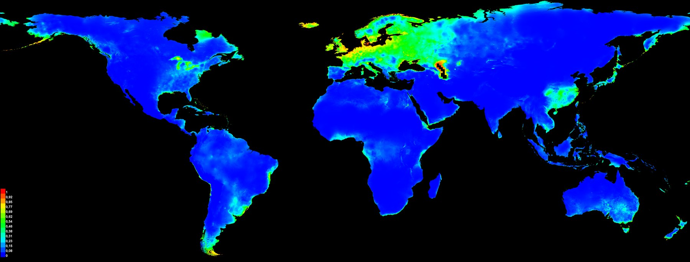
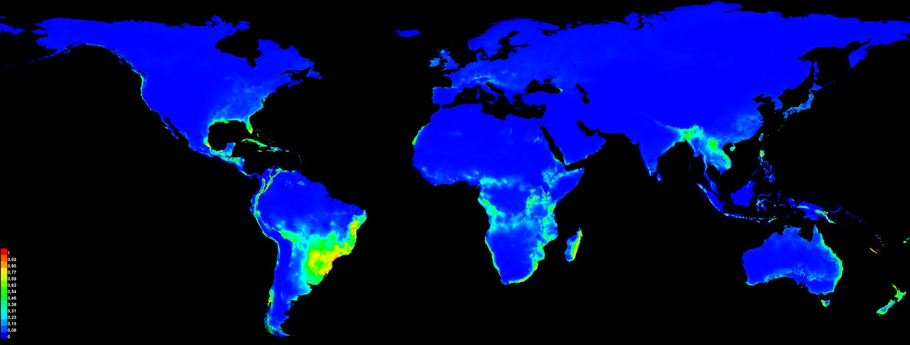
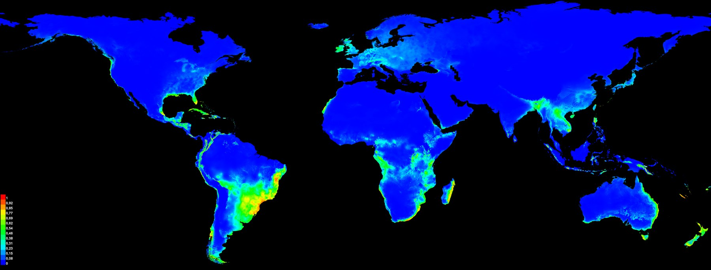
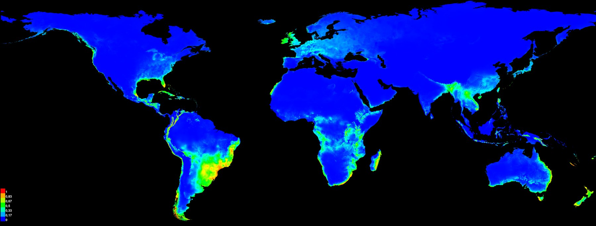
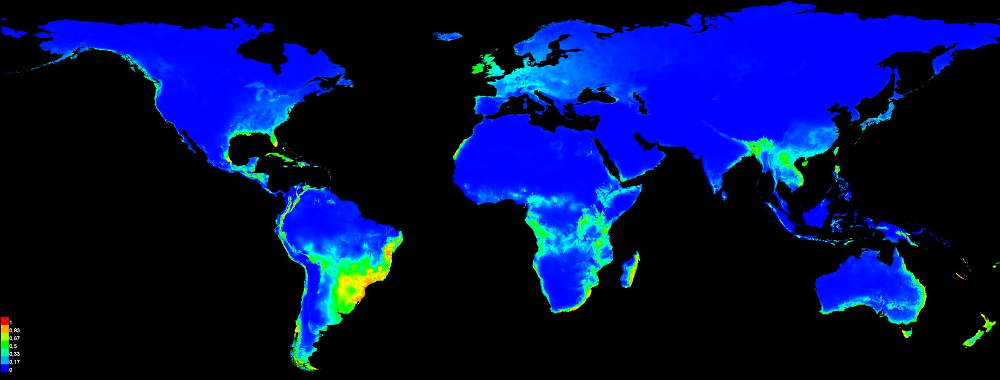
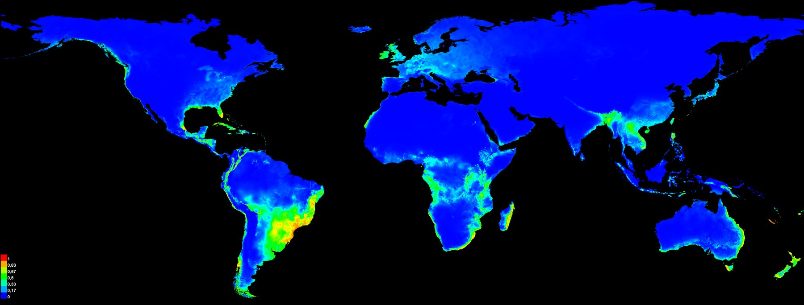
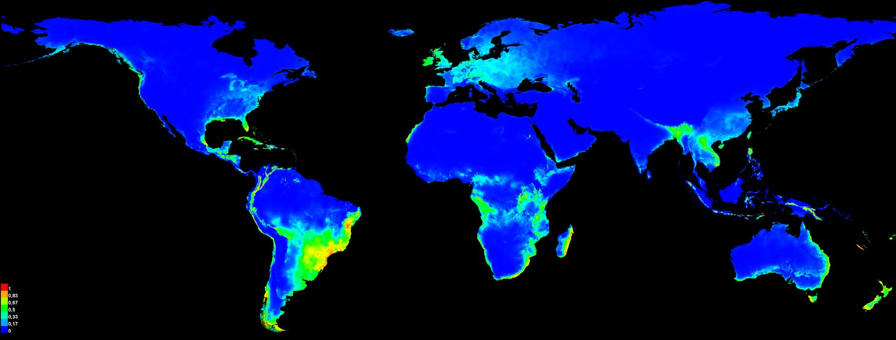

Ceratium furcoides: para onde uma microalga invasora pode se espalhar
Modelos de nicho que mostram a mudança de nicho durante a invasão global e projetam o risco futuro sobre reservatórios existentes e planejados.
- Período
- 2020–2021
- Colaboração
- Rafael L. Macêdo e coautores
- Meu papel
- Modelagem de nicho, projeções climáticas e mapas
- Ferramentas
- MaxEnt · Dinamica EGO · ArcGIS Pro

Clima atual · calibração com registros da área nativa · média das réplicas

Clima atual · calibração com registros das áreas invadidas · média das réplicas

Clima atual · calibração com todos os registros · média das réplicas

Futuro · SSP1-2.6 · modelo climático MIROC6 · mediana das réplicas

Futuro · SSP2-4.5 · modelo climático MIROC6 · mediana das réplicas

Futuro · SSP3-7.0 · modelo climático MIROC6 · mediana das réplicas

Futuro · SSP5-8.5 · modelo climático MIROC6 · mediana das réplicas
Modelo calibrado só com os registros da área de origem. Ele prevê pouca adequabilidade onde a espécie hoje invade, como o sudeste da América do Sul.
Modelo calibrado só com os registros das áreas invadidas. O contraste com a área nativa é a mudança de nicho descrita no artigo da Hydrobiologia.
Modelo com todos os registros, base das projeções futuras. A adequabilidade mais alta fica no sudeste da América do Sul.
Cenário de baixas emissões. Alterne entre os cenários para ver como a área adequada muda com o aquecimento.
Cenário intermediário de emissões.
Cenário de emissões altas.
Cenário de emissões muito altas.
Mapas originais do MaxEnt. As projeções do artigo combinam vários modelos climáticos; aqui, o MIROC6 permite comparar os quatro cenários.
O problema
Ceratium furcoides é um dinoflagelado de água doce, originário de regiões temperadas, que forma florações associadas à mortandade de peixes e à piora da qualidade da água. Na América do Sul, ele se espalha por reservatórios. Duas perguntas guiaram o trabalho: a espécie ocupa nas áreas invadidas o mesmo nicho climático da área de origem? E para onde pode se expandir com as mudanças climáticas e a construção de novas barragens?
Os dados
- Registros de ocorrência na área nativa e nas áreas invadidas.
- Variáveis bioclimáticas do WorldClim para o presente e para os cenários do CMIP6.
- Localização de grandes barragens existentes e planejadas.
O método
- Três calibrações no MaxEnt: só a área nativa, só as áreas invadidas e todos os registros.
- Comparação dos nichos nativo e invadido.
- Projeção para quatro cenários SSP com até nove modelos climáticos globais, em 34 combinações, resumidas em mapas de consenso por cenário.
- Sobreposição das áreas adequadas com as grandes barragens existentes e planejadas.
O resultado
O nicho fundamental da espécie mudou durante a invasão global. Até 2041–2060, as áreas adequadas tendem a se expandir e a se sobrepor a grandes barragens existentes e planejadas.
Como a espécie pode se estabelecer a partir de uma única célula e forma estruturas de resistência, os artigos recomendam detecção precoce e medidas de mitigação nas bacias de maior risco.
Publicações
- Macêdo RL, Franco ACS, Russo P et al. (2021). Climate and landscape changes enhance the global spread of a bloom-forming dinoflagellate related to fish kills and water quality deterioration. Ecological Indicators 133: 108408. doi ↗
- Macêdo RL, Russo P, Corrêa RF et al. (2021). The drifting dinoflagellate Ceratium furcoides: fundamental niche shift during global invasion. Hydrobiologia 848: 2105–2117. doi ↗